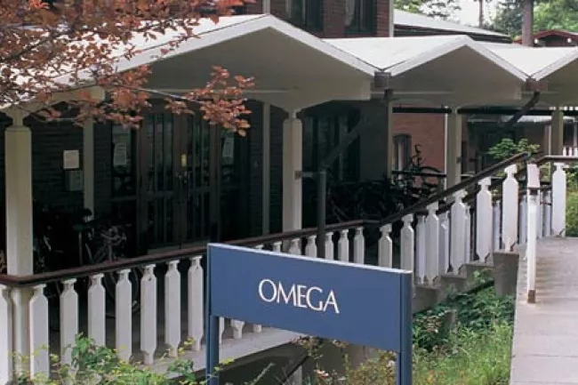
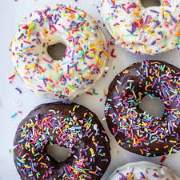

My College Experience
Go back
I started as a Running Start Student, who wanted to go into Computer Science.
I took a java course at my community college,
and then random other courses to finish my Associate degree in Science.
I transferred to Western for the Fall of 2020, the first full year of COVID school.
My experience taking 3 other CS classes online was extremely unpleasant for me.
Fall 2021 was a hybrid learning environment.
I decided to live in the dorms as my first true college experience.

Which was a difficult change in my life. I also switch majors to Applied Mathematics.
I continued through Fall of 2022 and ran into Brian Hutchinson at Data and Donuts,
I generally do not interact with tabling,
but as a college student I could not pass up on some free food,
especially donuts.
